How I Went From Dreading Every Step To Walking Steady And Pain-Free In Just 2 Weeks.
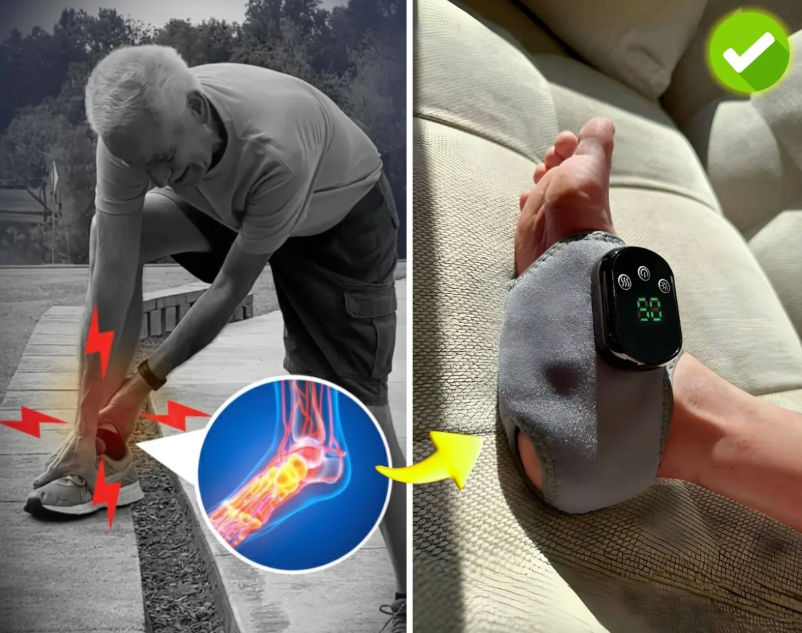
People with neuropathy, poor circulation, or restless legs - read this article before trying anything else.
I've suffered from burning, tingling feet and neuropathy for over 10 years.
At first, I thought it was just a normal part of getting older… but over time, the pain became unbearable.
Simple activities like standing up, walking around the house, or climbing stairs became a daily struggle.
The constant pins-and-needles, numbness, and throbbing made me dread even getting out of bed.
It started to affect my whole life – I couldn't enjoy family trips, stopped going on walks, and became less present with my loved ones.
I got moody, felt exhausted and miserable all the time.
And I tried everything:
❌ prescription meds like gabapentin made me groggy and foggy-headed.
❌ pain relieve creams gave only short-term relief, if any at all.
❌ compression socks and cheap TENS units didn't work & ended up collecting dust in the closet.
I felt hopeless…
Can you relate?
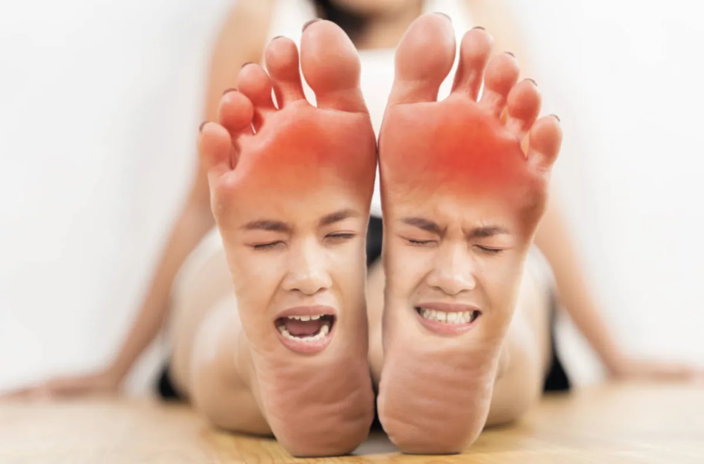
Now, imagine waking up with feet that feel lighter, less stiff, and not burning you alive — no throbbing that keeps you from sleeping, no aches that weigh you down.
Without endless pills, risky procedures, or expensive doctor visits?
Well, I finally discovered a breakthrough solution that is changing lives for anyone who suffers from neuropathy, nerve pain, and poor circulation.
It calms pain and revives tired feet quickly, easily, and without spending a fortune on medications every month.
It's called the EMSense Foot Massager.
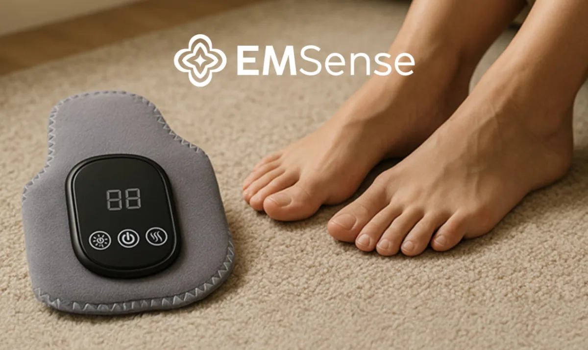
EMSense™ Triple Therapy
At first glance, EMSense might look like a simple foot wrap.
But once you slip it on and turn it on, it uses a powerful combination known as "Triple Therapy" to boost circulation, calm burning nerve pain, and bring strength back to your feet — so you can finally walk, stand, and move without constant pain holding you back!
1️⃣ Heat Therapy – warms your feet, relaxing tight muscles and helping blood vessels open up
2️⃣ EMS Therapy – activates the nerves and muscles to restore strength and sensation in your feet
3️⃣ Compression Support – reduces swelling, improves stability, and helps your feet feel lighter and more refreshed
You see, devices like this were once only available at physical therapy clinics — but I don't have time to drive there 3 times a week and pay $80 a session.
The benefit of EMSense is that I can use it right at home — while reading, watching TV, or even before bed.
I'm already sitting down for hours every day anyway, so why not use that time to actually heal my feet?
It was a no-brainer for me.
Especially when they gave me a 30-day money-back guarantee.
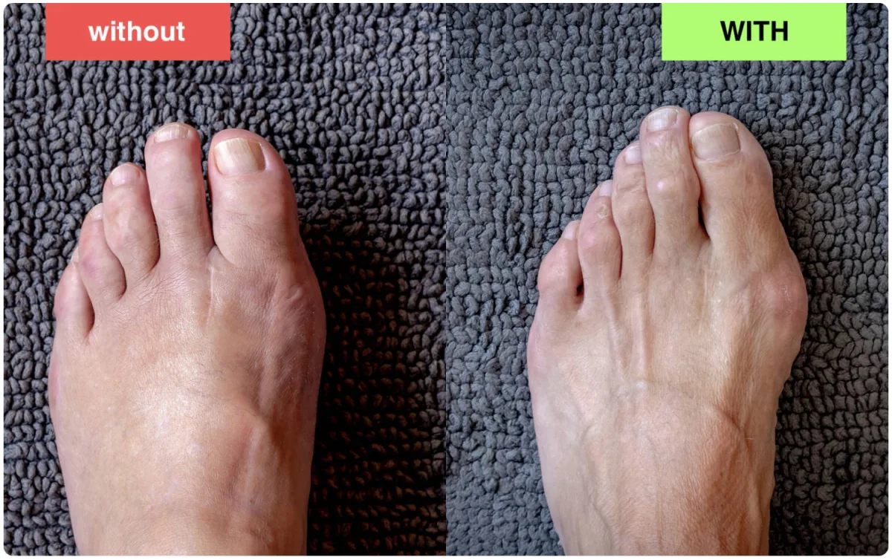
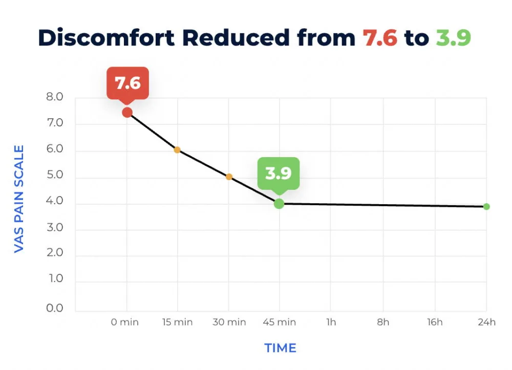
I tried EMSense for 2 weeks.
Here's exactly what happened:
DAY 1:
It arrived just 4 days after ordering.
The packaging was neat, with clear instructions and a remote to control the settings.
I plugged it in, sat down, and placed my feet on the pad.
I started with a gentle intensity and let it run for 25 minutes.
There's no pain — just a light tingling sensation as the pulses start.
If your nerves have been dulled for a while, the sensation may feel a bit unusual at first..
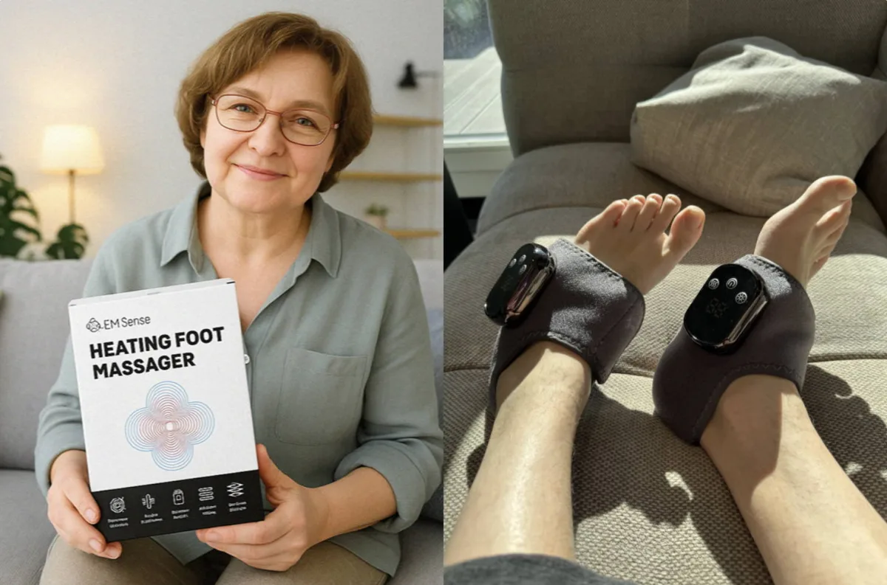
After first session: To my surprise, the usual burning and tingling I feel when sitting still was noticeably calmer.
My feet felt lighter, warm, and soothed.
I even walked around the house afterward and felt steadier on my feet.
That night, I slept through without being woken up by burning nerve pain.
I couldn't believe this simple device was already helping!
DAY 3:
"Surely this is just some kind of placebo effect," I thought…
But when I skipped using it the next morning and tried to walk around, the burning and tingling came right back!
Once I sat down and used EMSense for 25 minutes again..
No burning pain. Much less heaviness.
I managed to walk to the kitchen and back without holding onto the wall at all.
It felt like the circulation in my feet had improved, and the numbness wasn't as intense.
I began using EMSense once during the day and again before bed.
Already, the pain was less and less each day.
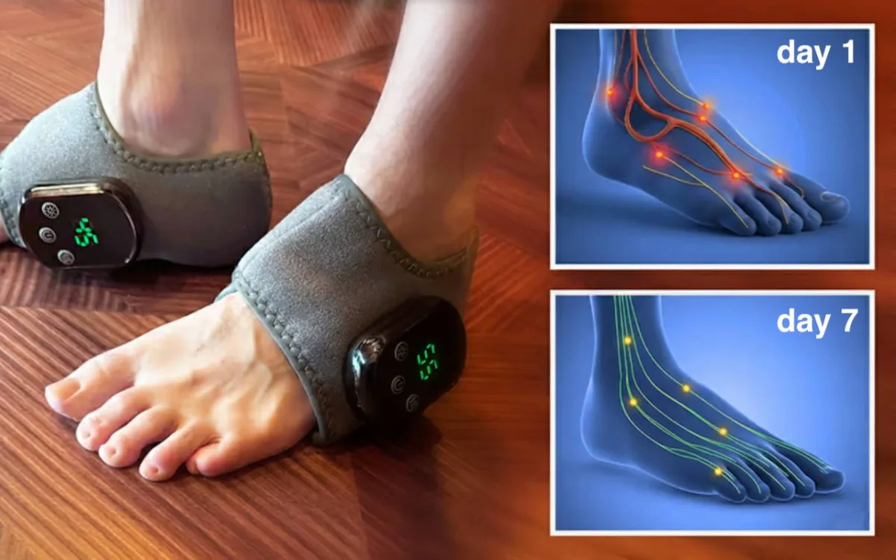
DAY 7:
Yesterday, something incredible happened — I went grocery shopping and walked the entire store without needing to sit down.
Normally, my feet would start burning halfway through, and I'd have to lean on the cart and rush to finish.
But this time, I felt steady and strong the entire trip.
I even stood in line without automatically looking for somewhere to sit.
My confidence started to come back.
I realized I hadn't taken gabapentin in 3 days.
Finally, it felt like I was getting my life back.
DAY 14:
It's been 2 weeks since I started using EMSense, and I honestly feel like a new person.
I can stand and do chores without my feet screaming at me.
I can finally enjoy walks again and no longer dread getting up from a chair.
I've even started doing light stretches in the morning — something I hadn't done in years.
My mood is better, and I don't feel mentally drained all the time.
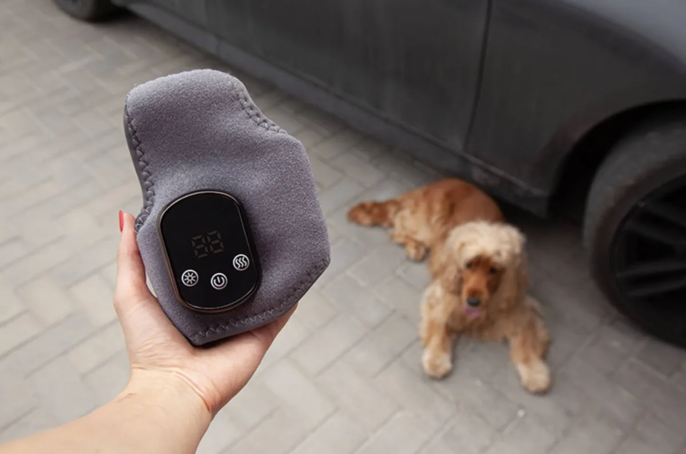
Today, I was finally able to take my little buddy out for a 30-minute walk, completely pain-free!
My spouse said I looked more energized and happy.
Even my neighbors noticed I've been out and about more.
One of them joked that I looked 10 years younger!
EMSense helps stimulate blood flow, deliver nutrients to nerves, and block pain signals — giving your body a chance to repair itself naturally. If you're struggling with neuropathy, burning feet, or poor circulation, this device is for you.
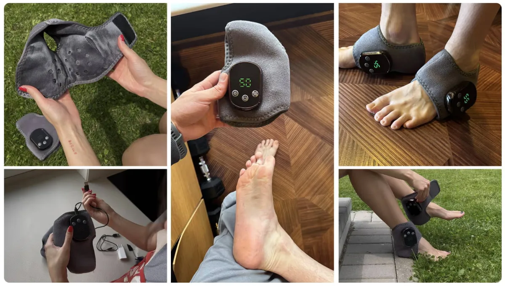
How To Use
Step 1:
Wrap It Around Your Feet
Slide your feet into the massager and fasten the adjustable straps for a comfortable fit.
Step 2:
Choose Your Settings
Select your preferred massage intensity and heat level using the simple control panel.
Step 3:
Sit Back and Relax
That's it! In just minutes, you'll feel soothing warmth, massaging pulses, and light compression working together to reduce discomfort.
How to Get Your Hands on EMSense (While It's Still Available)
Here's the catch: EMSense isn't mass-produced in giant factories.
Each device is carefully built from premium components, and thoroughly tested before shipping.
As a result, our stock is extremely limited - and every time we open up orders, they tend to sell out fast.
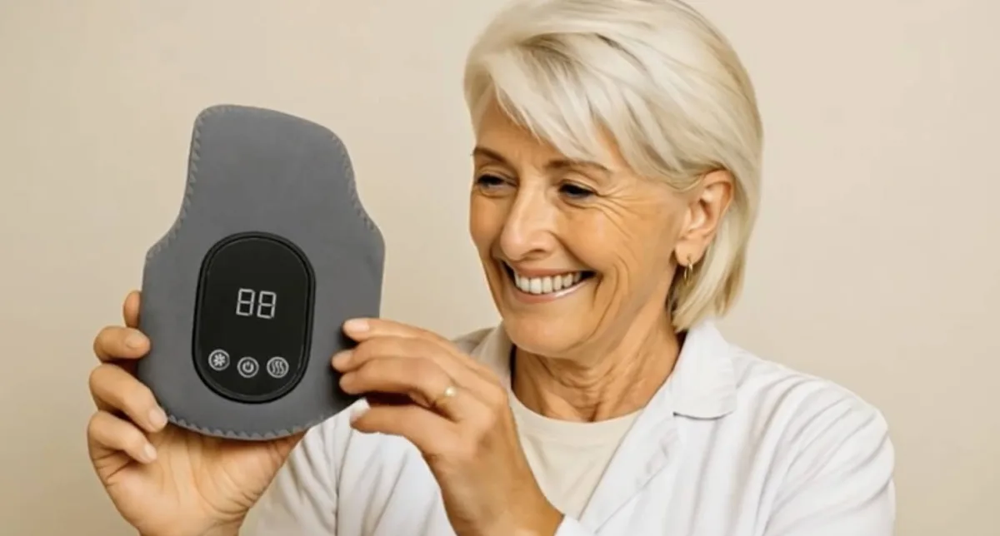
You Won't Find EMSense in Stores
It's not available in Walmart, Target, Amazon, or anywhere else.
The authentic EMSense Triple Therapy Massager can only be ordered through our official website.
Right now, you can get yours for just $49.99 - far less than the price of a single therapy session at a clinic.
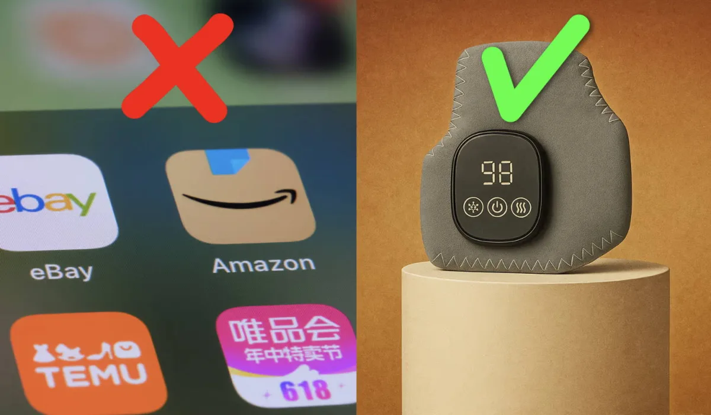
Final Thoughts
The EMSense Foot Massager has truly transformed my life, and I couldn't be happier with the results.
It's now an essential part of my daily routine, helping me feel better and making me confident about staying active as I age.
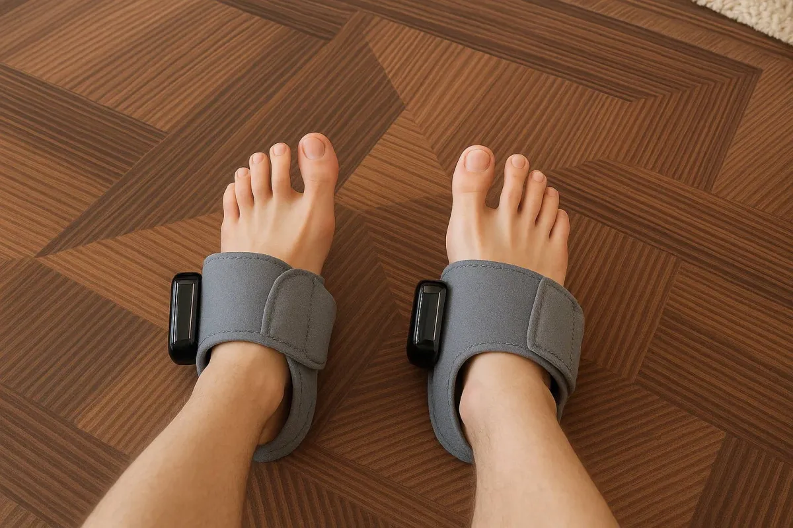
If you suffer from neuropathy, nerve pain, or restless legs and are searching for a natural, drug-free solution, I highly recommend you try the EMSense Massager.
This is the easiest and most affordable way to calm nerve pain, boost circulation, and sleep better.
I use it every single day as part of my evening routine.
I feel happier, more energized, and hopeful about the future.
I honestly didn't think I would ever feel this way again.
For anyone looking to get in on this amazing breakthrough, I'll include the link below.
The first time I tried to order, they were out of stock.
So if I were you, I'd definitely grab one while they're available!
Click the link below to check availability and see if the discount is still active.
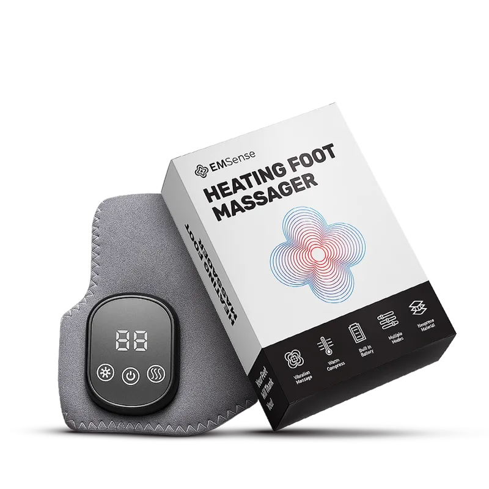
**UPDATE: Since going viral on Facebook, demand for EMSense has skyrocketed. They've already sold out twice!
Frequently Asked Questions
Relief from burning, tingling, and numbness. The EMSense Foot Massager is designed to boost circulation, calm nerve pain, and reduce daily discomfort. Its dual-action EMS + TENS technology stimulates your muscles, delivers oxygen-rich blood to your nerves, and helps block pain signals — supporting faster recovery and healthier feet over time.
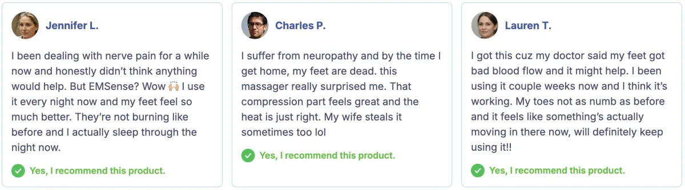
For best results, I recommend using EMSense daily for 15–30 minutes every day or every other day. It's 100% safe for regular use and can be easily incorporated into your morning or evening routine.
Many users report noticeable relief after just one session, especially from burning, tingling, or numbness. As with everything, consistent use over time will bring most benefits, such as longer-lasting improvement in circulation, neuropathy and nerve comfort.
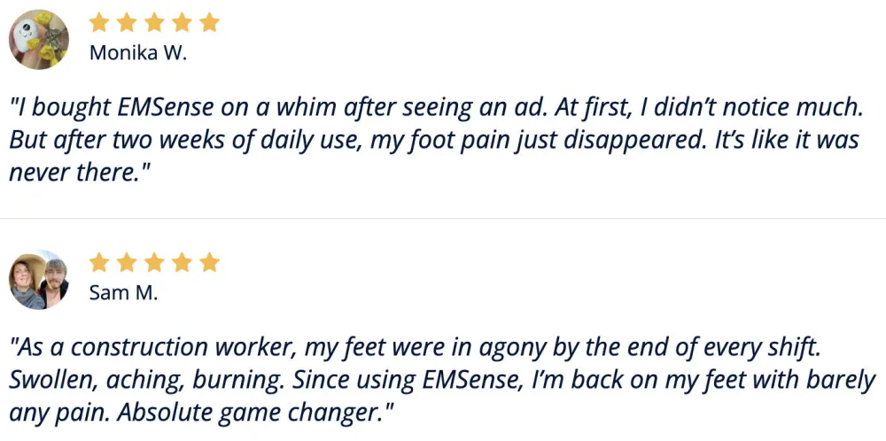
The Massager can be used for both left and right foot, so you can buy only one. EMSense is made with an adjustable wrap design that comfortably fits all foot sizes, including both men and women, thank to the flexible straps which ensure a secure fit, regardless of the foot size.
EMSense is intended for use while sitting (or reclining) only. For safety and effectiveness, always remain seated and relaxed during your session.
Yes! There is a special promo sale going on today! Get 60% OFF by clicking the link below >>
Of course! The company offers a 30-day money back guarantee so if, for whatever reason, the massager is not the right fit for you, you can return it for a full refund, hassle-free.
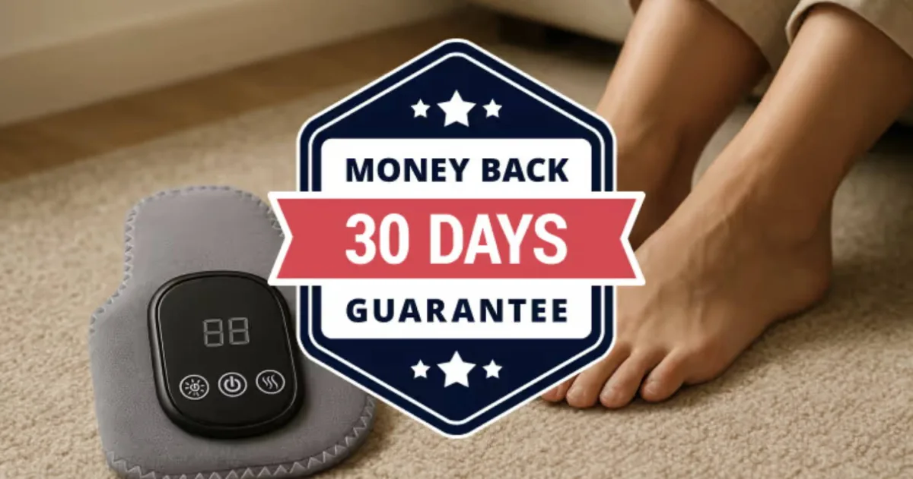
Comments:
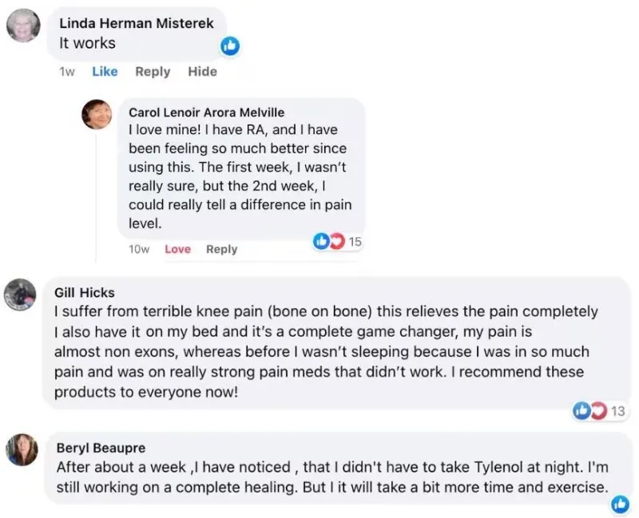